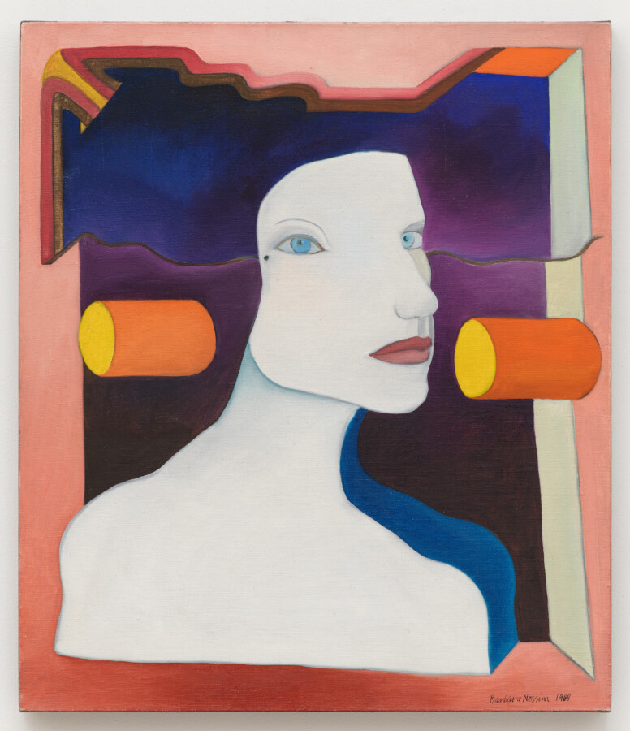

Barbara Nessim: My Compass Is the Line
Since the 1960s, Barbara Nessim (b. 1939) has developed a unique visual language in painting and drawing that challenges traditional gender norms. As one of the first women to gain prominence in the male-dominated world of commercial art and illustration, Nessim’s work confronts stereotypes about femininity and sexuality, while also celebrating the agency of women. In every facet of her work—whether as a visual artist, illustrator, designer, teacher, or archivist—Nessim’s practice is guided by an insatiable curiosity, driving her to continually explore new ideas, techniques, and mediums. A pioneer in computer art during the 1980s, Nessim has had an impact far beyond the art world, including fashion, advertising, and pop culture. By consistently challenging norms and pushing the boundaries of artistic expression, Nessim continues creating work that is as relevant and resonant today as it was when she first began her career.
Barbara Nessim’s solo exhibition at DePaul Art Museum—her first one in Chicago—includes paintings, drawings, computer art prints, a site specific installation, with special emphasis on the artist’s sketchbooks or her “forever books,” as she calls them, which have been instrumental to her creative process. “The books tell the story, they see it all, the good parts, the bad, and the ugly. Nothing escapes. Nothing edited. It’s the rule […] It must have a beginning and an end, just as I live my life.”
Barbara Nessim: My Compass Is the Line is organized by DePaul Art Museum and curated by Ionit Behar, PhD.